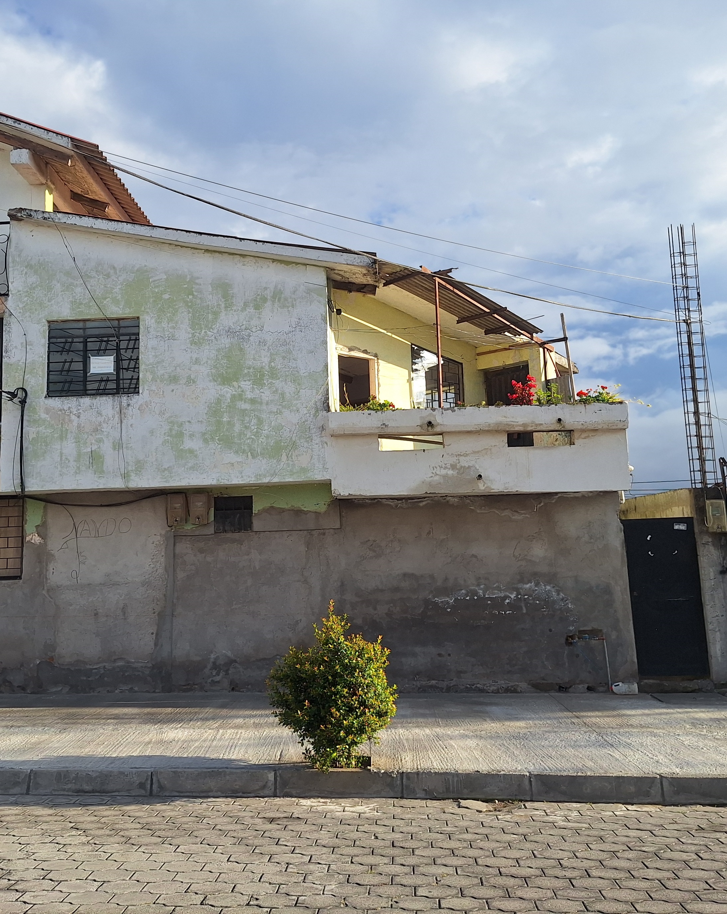
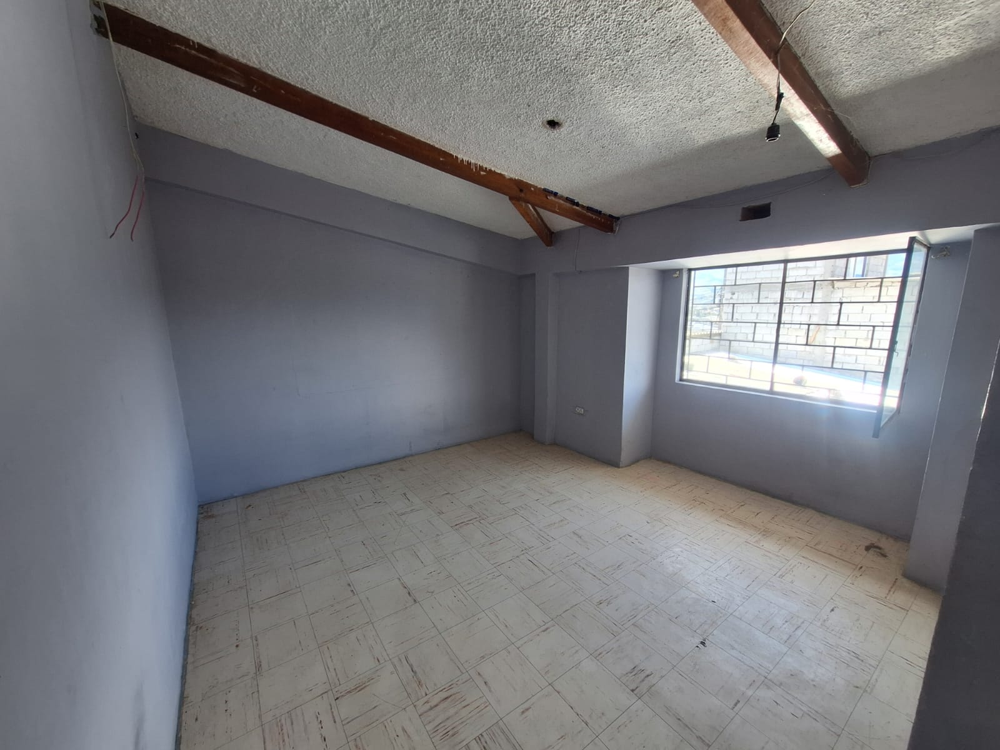
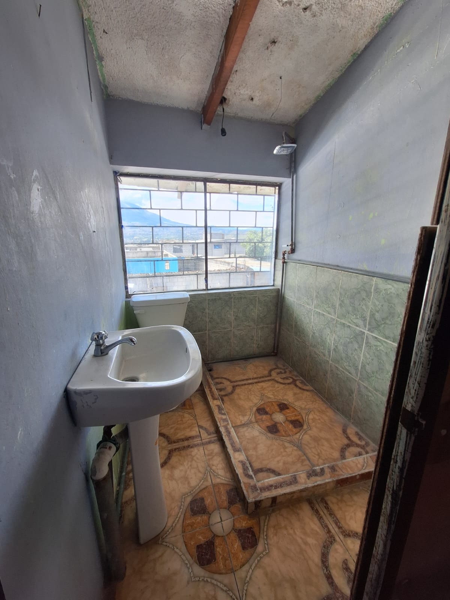
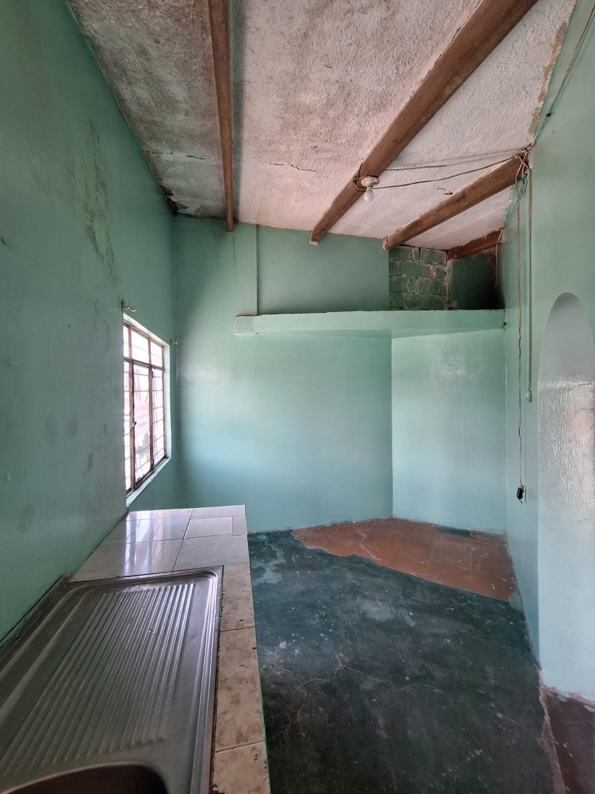
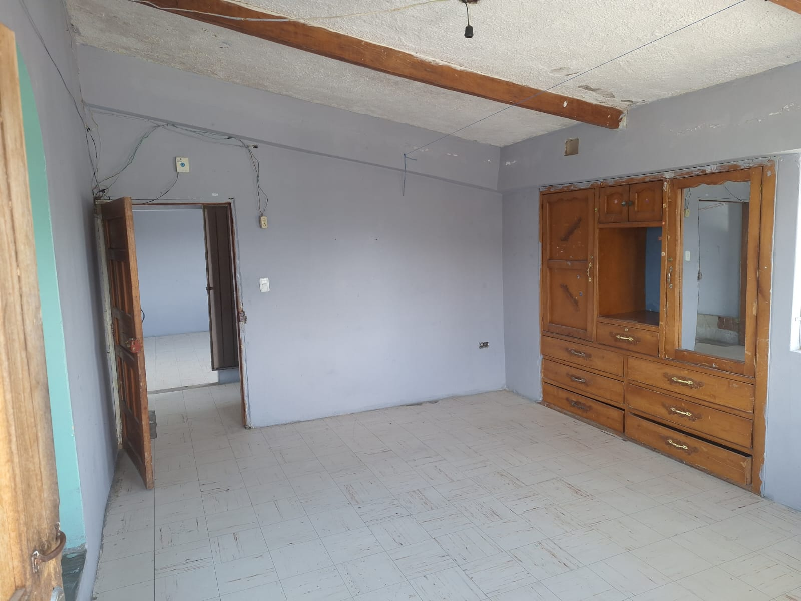
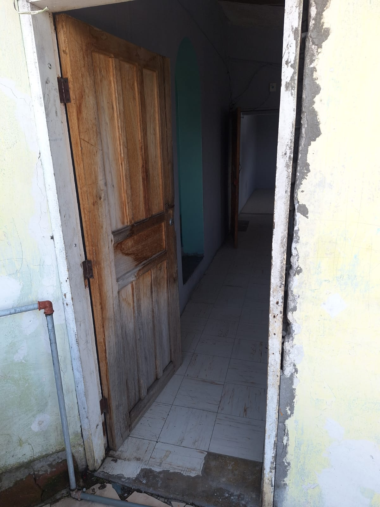
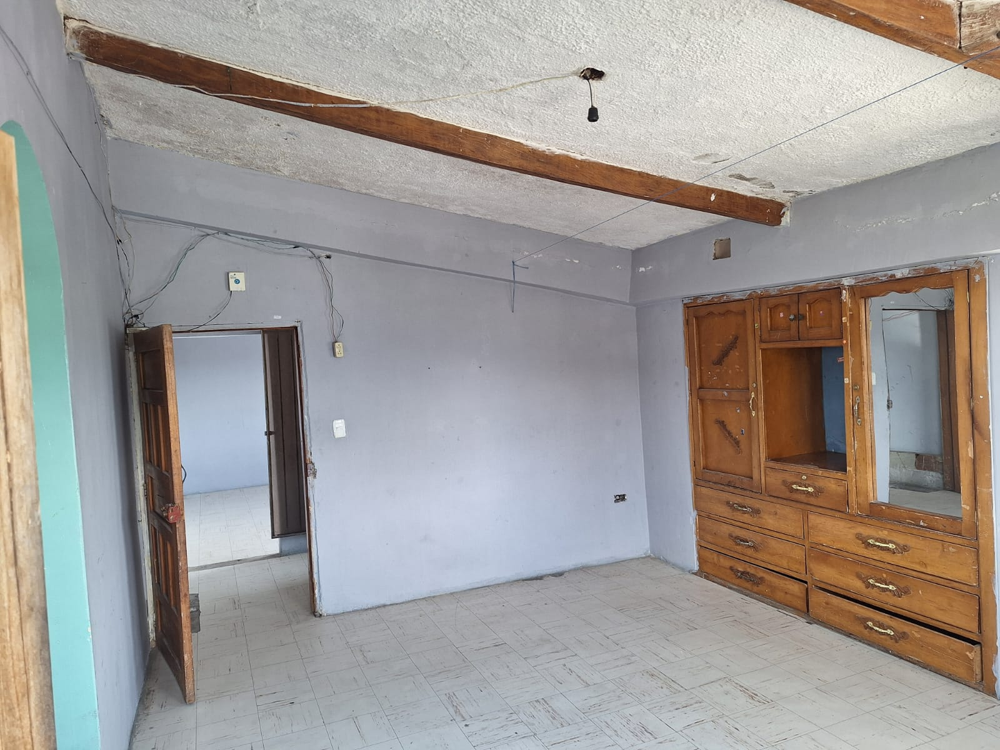

← volver al mapa
Casa - EC-RJ-154896
EC-RJ-154896 · casa · IBARRA, Imbabura
★ Oferta destacada







Datos del remate
| Avalúo pericial | $35,351 |
| Tipo de bien | casa |
| Área de construcción | 118.74 m² |
| Área de terreno | 82.65 m² |
| Cantón / Provincia | IBARRA, Imbabura |
| Dirección / Sector | Alpachaca,. el inmueble corresponde a un lote de terreno signado con el numero (1a) el cual dentro de su superficie tiene edificada una casa de habitación de dos plantas de hormigón armado ubicado en el sector urbano de la parroquia alpachaca, cantón ibarra, provincia de imbabura, específicamente en la calle de las gaviotas n.º s/n y calle machala, en el barrio cooperativa de vivienda 15 de diciembre. |
| Señalamiento | Segundo Señalamiento |
| Fecha de remate | 2026-09-03 |
| No. de proceso | 10333202102216 |
Análisis vs. mercado
| Avalúo por m² | $298/m² |
| Mediana de mercado en la zona | $632/m² |
| Descuento vs. mercado | 52.9% |
| Comparables usados | 5 |
| Radio de búsqueda | 2000 m |
| Puntaje | 92/100 |
Descripción completa del avalúo
casa de habitación de dos plantas con cubierta a una agua.planta baja. – mini departamento independiente, 1 sala - comedor, 1 cocina, 1 dormitorio y 1 baño completo.planta alta. – 1 hall - tipo balcón (exterior), 1 baño completo, 2 dormitorios y 1 cocina.áreas de servicio. – el patio y la zona de lavandería son áreas compartidas entre los dos departamentos. la circulación vertical (escaleras) es exterior sin cubierta y conecta con el patio, el cual es de uso exclusivo para el departamento de planta alta.
casa habitación, vivienda multifamiliar, 2 pisos sin terraza, con cubierta a un agua. - el lote presenta un perímetro de forma geométrica irregular. - en cuanto a infraestructura de servicios, el sector dispone de agua potable, red de energía eléctrica, alcantarillado sanitario, servicio de telefonía móvil y acceso a transporte público - el uso del suelo es residencial. - el extracto socio económico es medio a bajo. - las vías de acceso son de adoquín en buen estado de conservación, y la consolidación del sector se considera de nivel medio. - el ingreso principal se realiza por la calle de las gaviotas, la cual conecta con vías secundarias y de tránsito moderado. - acceso a planta baja y alta desde el patio; el ingreso al departamento superior se realiza mediante gradas exteriores descubiertas.
el inmueble corresponde a un lote de terreno signado con el numero (1a) el cual dentro de su superficie tiene edificada una casa de habitación de dos plantas de hormigón armado ubicado en el sector urbano de la parroquia alpachaca, cantón ibarra, provincia de imbabura, específicamente en la calle de las gaviotas n.º s/n y calle machala, en el barrio cooperativa de vivienda 15 de diciembre.
Límites: norte con calle de las gaviotas con propiedad de la señora dora mariana álvarez díaz. 5,60 m 12,33 m sur con lote número uno (superficie sobrante de la propiedad de los herederos de la señora maría celiana díaz) 14,23 m este con propiedad de la señora martha isabel mina congo 5,53m oeste con lote número uno (superficie sobrante de la propiedad de los herederos de la señora maría celiana díaz) 3,06 m
Clave catastral: 10010213210003000000000.
Análisis de inversión
★ Buena oportunidadBuen descuento (53%); vivienda multifamiliar de 2 plantas (2 unidades), extracto socioeconómico medio-bajo.
A favor:
- Buen descuento
- Dos unidades habitables
Análisis elaborado a partir de la descripción del avalúo — no es asesoría legal ni financiera.
Esta ficha es una copia de lo publicado en el sitio oficial de remates
judiciales de la Función Judicial del Ecuador, para consulta — no
reemplaza el expediente judicial. remates.funcionjudicial.gob.ec no da
un link propio por remate, por eso se generó esta página aparte.
Antes de ofertar, el expediente debe revisarlo un abogado.